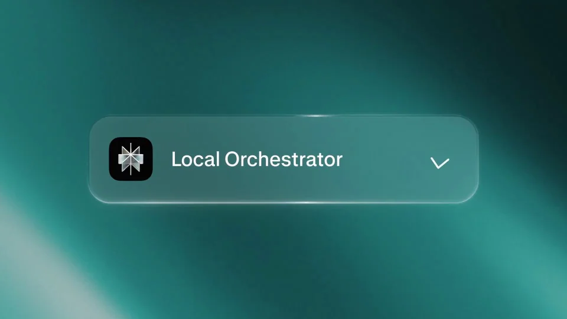
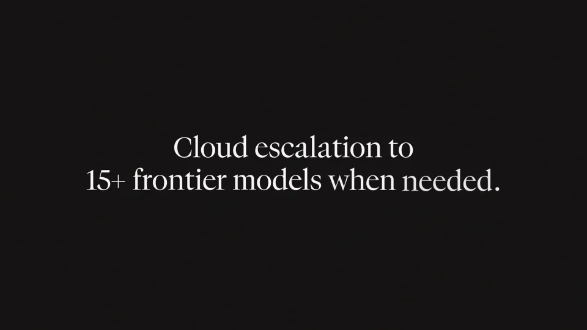
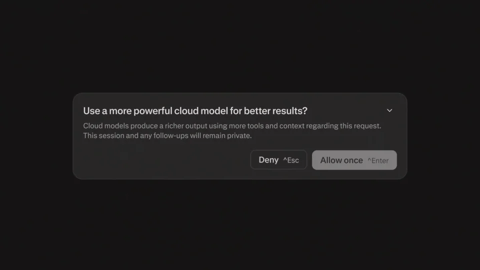
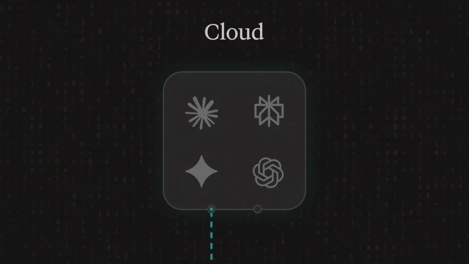
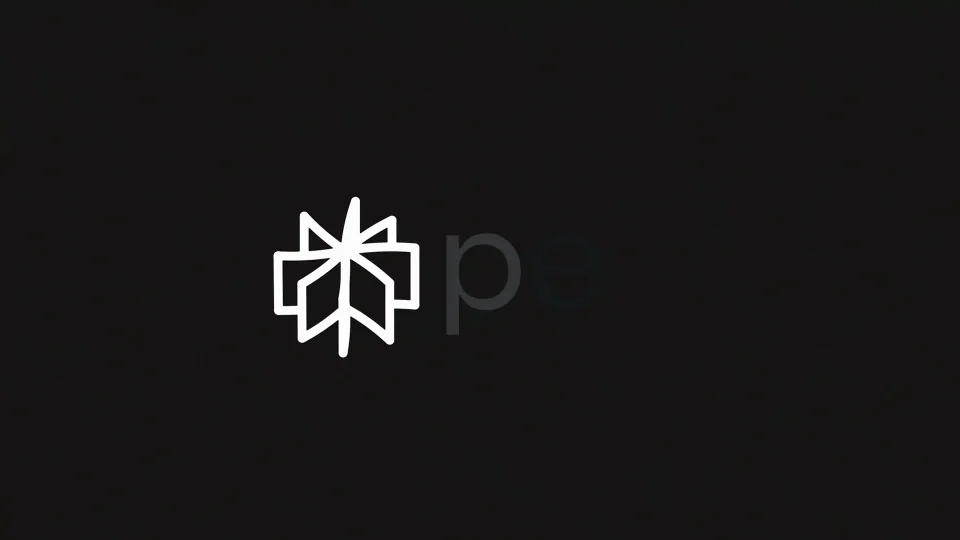

Perplexity / V267
Perplexity｜Windows 本地计算
用一次安装和一次云协作，把“在本机运行，再按需扩展”的产品路径讲清楚。
构图与编排 可播放 · 可替换内容
整体编排规则示例
查看 HTML 源码
<!doctype html><html lang="zh-CN"><meta charset="utf-8"><meta name="viewport" content="width=device-width,initial-scale=1"><title>Perplexity｜Windows 本地计算 · sequence</title><style>html,body{margin:0;width:100%;height:100%;overflow:hidden;background:#131213}canvas{display:block;width:100%;height:100%;object-fit:contain}</style><body data-mode="sequence"><canvas width="1000" height="600"></canvas><script src="data.js"></script><script src="common.js"></script><script src="scene.js"></script><script src="bridge.js"></script></body></html>画面元素下载按钮进度条本地拓扑确认弹窗云节点
MOTION LANGUAGE
动作与构图
局部动作 · 构图规则
01
安装完成，工具网络才展开
安装完成，工具网络才展开规则示例
查看 HTML 源码
<!doctype html><html lang="zh-CN"><meta charset="utf-8"><meta name="viewport" content="width=device-width,initial-scale=1"><title>Perplexity｜Windows 本地计算 · sequence</title><style>html,body{margin:0;width:100%;height:100%;overflow:hidden;background:#131213}canvas{display:block;width:100%;height:100%;object-fit:contain}</style><body data-mode="clip" data-start="3" data-end="14"><canvas width="1000" height="600"></canvas><script src="data.js"></script><script src="common.js"></script><script src="scene.js"></script><script src="bridge.js"></script></body></html>下载按钮、进度条和启动状态依次出现。进度达到终点后再展开本地节点，工具网络从设备附近长出，作为安装成功的结果。
02
确认动作连接云与本地
确认动作连接云与本地规则示例
查看 HTML 源码
<!doctype html><html lang="zh-CN"><meta charset="utf-8"><meta name="viewport" content="width=device-width,initial-scale=1"><title>Perplexity｜Windows 本地计算 · sequence</title><style>html,body{margin:0;width:100%;height:100%;overflow:hidden;background:#131213}canvas{display:block;width:100%;height:100%;object-fit:contain}</style><body data-mode="clip" data-start="14" data-end="29"><canvas width="1000" height="600"></canvas><script src="data.js"></script><script src="common.js"></script><script src="scene.js"></script><script src="bridge.js"></script></body></html>先出现云协作主张，再展示确认弹窗。确认后云节点进入上层，连接线落回本地设备；保持上下层次和明确方向，让用户知道动作从哪里发起。
03
深底界面，少量连接色
深灰黑作为大背景，白色文字保留清楚的标题层级，青绿色用于节点和连接。主张标题采用衬线，安装项与弹窗采用无衬线；弹窗居于操作焦点，本地设备保持在下方参照位。
04
迁移成其他平台安装说明
可以换操作系统、设备与工具名，安装按钮和提示文案随之替换。保留“下载→完成→启动→确认协作”的必要顺序，简化片长时优先缩短等待段。
SEQUENCE
段落与节奏
点击段落，定位到上方编排示意。





画面参考 · 离散静帧
KEEP THE RELATIONSHIPS
制作其他主题
- 换平台保留安装→运行→确认→协同的顺序。
制作约束
下载按钮 / 进度条 / 本地拓扑 / 确认弹窗 / 云节点
- 安装进度完成后才能出现本地工具网络；云提升先经过确认。
- 云与本地纵向分层，虚线明确连接关系。